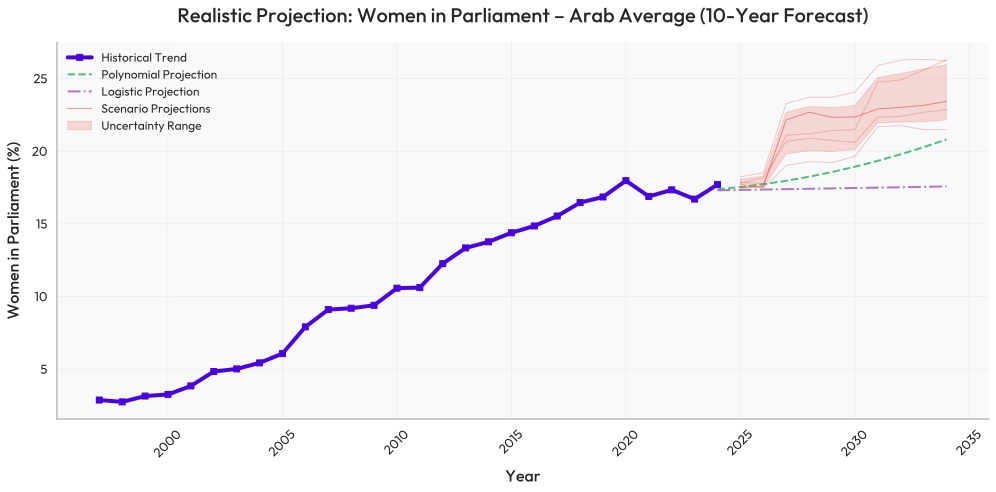
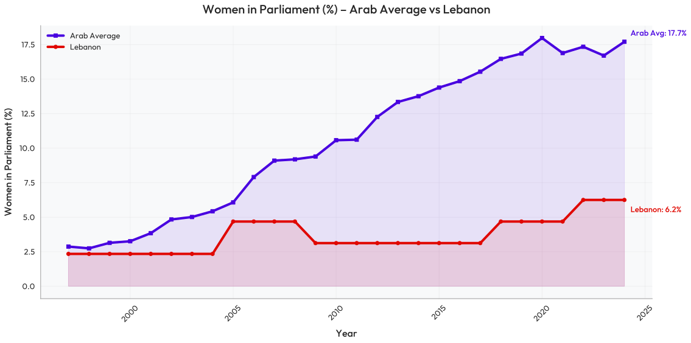
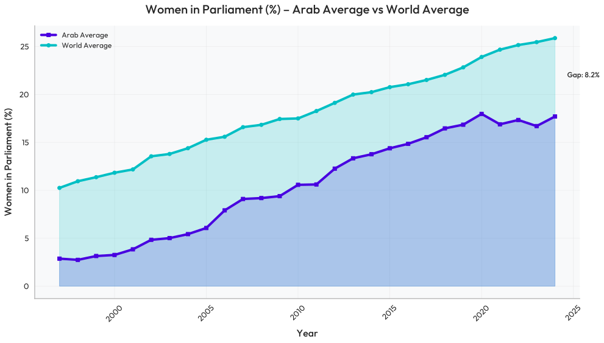
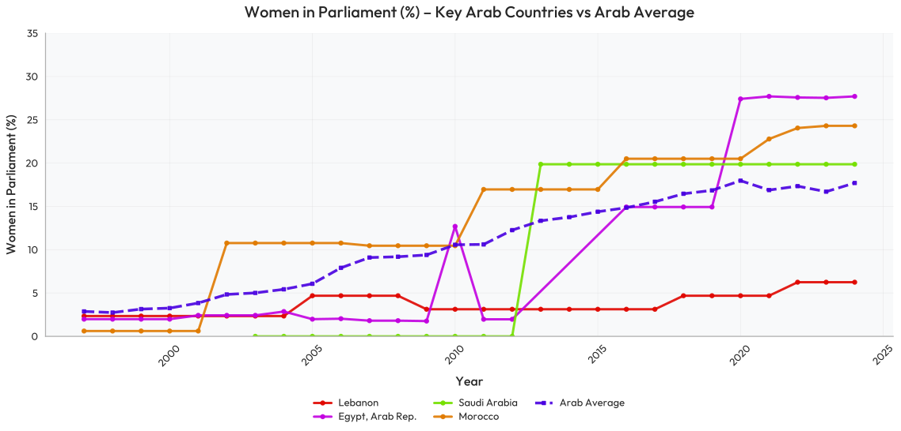
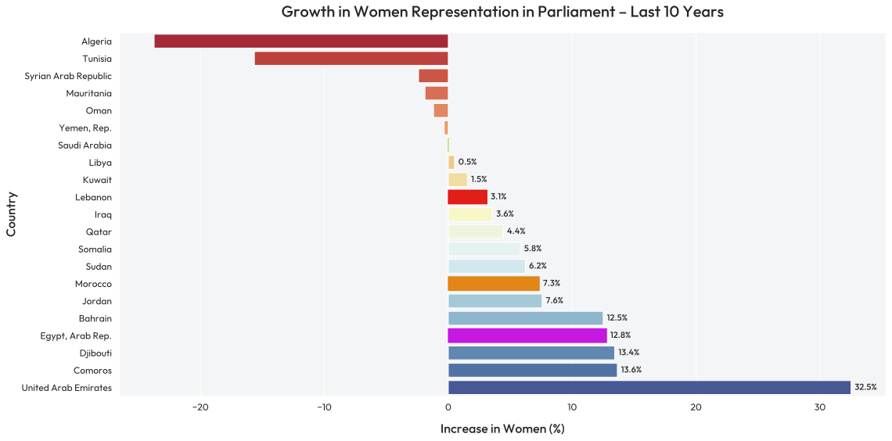

Global Political Representation
Exploring the progress and challenges of women's participation in parliamentary systems worldwide
Arab Average Projection
Tracking the realistic forecast of women’s parliamentary representation in the Arab region over the next decade
Arab vs Lebanon Average
Comparing Lebanon's women's parliamentary representation with regional averages.
World vs Arab Average
Closing the Gap: Women's Political Representation in Lebanon vs Global and Arab Averages
Arab Women in Politics
Tracking two decades of change in women's parliamentary representation across key Arab nations.
Parliamentary Gender Shift
Tracking two decades of change in women's parliamentary representation across key Arab nations.
Women Candidates by District
Visualizing where women candidates ran during the 2022 Lebanese elections.
Women in Lebanon
Based on Lebanese parliamentary election data (2022) and contextual estimates.
Women MPs by Political Affiliation – Lebanon
Educational Background of Female Politicians
Voter Turnout by Gender – Lebanon
Sustainable Development Goal
Women's political participation reinforces several UN Sustainable Development Goals (SDGs) that promote equality, inclusion, and strong institutions.
SDG 5 – Gender Equality
Empowering women in politics ensures equal representation and leadership opportunities, advancing gender equality worldwide.
SDG 10 – Reduced Inequalities
Inclusive political systems help reduce social and economic disparities, giving all groups a voice in governance.
SDG 16 – Peace, Justice & Strong Institutions
Balanced representation strengthens democracy, accountability, and the integrity of political institutions.